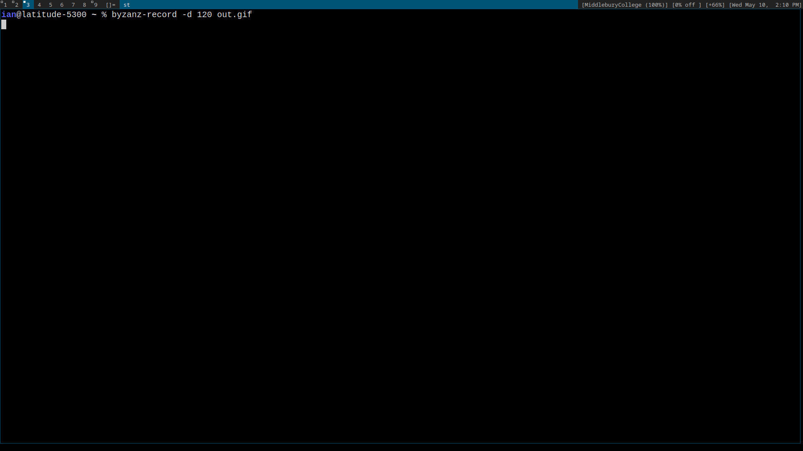

Abstract
For our final project we decided to create an agent that learns how to play the strategy board game Risk. For this, we explore a novel area of machine learning, namely, reinforcement learning. The greates challenge of the project was to create an appropiate environment that both simulates Risk, and it is also suitable environment for reinforcement learning. That is, for every action we take on the environment, we must be able to return a reward and an observation that represents the current state of the environment. At the end of the semester, we managed to design an implement a fully functional Risk environment that follows OpenAI Gymnaium’s API as well as visualization script that shows the progress of the game. We also created a DQN agent using deep reinforcement learning and we are currently in the training phase. We are still learning about deep reinforcement learning and we believe we will be able to fine tune the training of the agent in the future.
Here is the link to our repository:
Introduction
Our ultimate goal was to create an agent that learns how to play the strategy board game Risk. Over the years, artificial intelligence for board games has been an active field of research for different rearons. For one, they represent a benchmark for evaluating the performance of AI algorithms. Moreover, given that board games are a popular form of entertainment this facilitates human-machine interactions. And finally, AI for board games are an attractive introduction for advanced areas of machine learning such as deep reinforcement learning. A very popular example that encapsulates all of the above is the AlphaZero, an agent created by DeepMind that masters ches Silver et al. (2017).
We used reinforcement learning for the project and to get some background knowledge we explored “Reinforcement Learning” by Barto and Sutton Sutton, Barto, et al. (1999). Finally, there have been previous attempts to train an agent to play Risk, for example Wolf (2005). However, in their approach, a TD algorithm was used. We chose to use a Q-learning algorithm given that Risk is a complex strategy game and Q-learning incorporates a exploration-explotation strategy (typically using epsilon-greedy).
Values Statement
The potential users are board game enthusiasts who are interested in improving their skills at playing Risk or discover new strategies followed by the AI. Our project could also potentially have some impacts on the AI for boadgames community as it could provide some insights for similar implementations. Besides these, we do not see any direct benefit nor harm that our agent could potentially cause.
My personal reason to work on this project was my interest in the theory behind Reinforcement Learning. I believe that the project gave me a lot of opportunities to both learn some theory and mainly practice my coding skills in designing the Risk environment.
Materials and Methods
Data
For our project we did not need to collect any data directly. Most of the project involved creating a working Risk environment that simulates the game. Once we achieved this, data is created itself during the training phase. For instance, the environment is designed such that after every action taken by the AI, we return an observation and a reward that is later used to take other decisions by the agent.
Approach
We had two main challenges for the project: The Risk environment and the Reinforcement Learning algorithm.
Risk is a very complex board game that has a very large state space. That is, there are a lot of possible configurations of the board. In order to have a suitable environment, we decided to follow OpenAI’s Gymnasium API. That is, our environment must have an action_space and observation_space attributes as well as the the following methods: step, reset, render and close. The most important method is step, which takes as input an action, and returns a reward, an observation, and whether the game has terminated or not. This represented a big challenge given that risk has different phases during a single turn. First, a player gets some armies according to the number of territories they own, then these can be placed in any of the territories they own. Then comes the attack phase, where the player must choose where to attack. Finally, depending on the result of the attack, the player may choose to attack again or simply reinforce from neighboring territories. This poses a challenge given that at different stages of the game, different actions are possible. For instance, if a player wins an attack they can only choose between two options, whether to attack or not, but before attacking, the player can choose to attack to any territory they do not own. Unfortunately, OpenAI’s Gymnasium indicates that the action_space must be one of their data strucures (or Spaces), and these are fixed.
To solve this issue, we decided to have a Discrete action space of 43 possible actions (one for each territory in risk and one extra to just do nothing). Then, we divided one single turn of risk into several phases. Of course, the main issue with this is that sometimes the agent might choose a wrong action. For instance, if it chooses to attack its own territory. We tried to fix this by giving the agent a negative reward if it chooses an invalid move and we also passed all its possible valid moves at a given state through the observation step. From our training, it seems that the agent is able to learn to choose the correct moves as the reward increases over time as we train the agent.
The second issue was the Reinforcement Learning algorithm. From the research we did, we decided it was best to use the keras-rl package which is essentially a deep reinforcement learning algorithm. Moreover, we chose to create a DQNAgent mainly because its exploration-exploitation policy and given its flexibility to design a simple reward function. We had a big issue with the observation_space given that we wanted to pass the agent both an observation of the environment after a step and also the current phase it is at as well as the current valid moves, so that it would learn to not make invalid moves. However, this represented a problem as most of the examples out there that uses this algorithm use a simple observation_space. Our observation space was a dictionary and so to fix the issue we wrote our own simple Processor given that the MultiInputProcessor from the keras-rl package was not really working for our particular case.
At the end we were able to start training the agent against random players but we run out of time to actually see the results of our agent. Given the complexity of Risk, our environment and mainly our observation_space, we believe that training our agent will require a lot of computing power and time. We plan to first test the efficienty of our agent against random players and eventually we were planning to train the agent isung self-play which would definitely take more computing power but we believe would result in a much better agent.
Results

The gif above showcases our agent training. Unfortunately we ran out of time for the semester but according to the little training we were able to do, the reward seemed to increase slightly showing signs that our agent was learning to choose the right moves at each phase. Our biggest result is the fully-functional risk environment that both correctly emulates Risk for a given number of players (between 2 and 6), and correctly follows OpenAI’s Gymnasium API. Other reinforcement learners could use our environment to create better risk agents. Also we created a visualization tool so that they can visualize how their agents play the game.
Moreover, our work gives a lot of different paths for future work. For example, we could simplfy dramatically the action_space of our algorithm to only allow the agent to choose between yes or no, and in the step function we could implement some predetermined strategies that the agent would be able to easily learn.
One big factor holding us back is our lack of knowledge in deep reinforcement learning. Once we have a better grasp of this complex area, we will be able to fine tune our algorithm.
Conclusion
Our project worked in the sense that we were able to design and implement a Risk environment in which different Reinforcement Learning algorithms can be applied to. Also, we were able to implement a functional DQNAgent that is trainable on our environment, we name it Noel Gallagher after Noel Gallagher the chief songwriter and lead guatarist of the hit brit pop band Oasis, who is widely speculated to be a Risk enthusiast.
Unfortunately, we did not meet all the goals we set at the beginning of the project. We were hoping to have a trained agent by the end of it but we were not able to achieve so. However, we did fulfill our goals in terms of exploring reinforcement learning and even grasping the more complex area of deep reinforcement learning. If we had more time and computing power, we believe we could have achieved a trained agent. Moreover, with additional time we could have explored different deep reinforcement learning algorithms that could potentially work better for our environment. We are generally happy with our results given that we did not have an extensive period of time to work on this complext project.
Group Contribution
We mostly worked together (phisically) in most parts of the project, specially on the environment and the keras-rl algorithm implementation. Ian worked on the visualization of the environment.
Personal Reflection
I found this project to be very rewarding. Even though, we did not fully achieve our initial goals, the process of planning and implementing the project helped me grow a lot. First, this was my first time setting up a git work-flow and planning a technical project so I really enjoyed that aspect. Moreover, before starting with the project, we spent some time learning about Reinforcement Learning and discussing ideas on how to implement the environment. I came across a variety of new ideas and I found myself comming up with interesting solution for problems we found along the way.
Overall, I learned new theory on Reinforcement Learning, specially on Q-learning and PPO algorithms and some ways these are implemented. Moreover, I became aware of the fascinating area of research devoted to develop AI agents to play board games/video games, as well as OpenAI’s Gymnaium, an amazing place for those getting started with RL. I believe that one of the most valuable skills I gained during the project was communication. We maintained a very efficient git work-flow that gave room for both of us to try new things and report back on things that worked and things that did not.
Even though it might seem we did not achieve a lot, I feel we did achieve a lot. I was not only able to explore a completely new area of machine learning, but I also really improved my coding and design skills. Designing the environment was a really complext task and I feel we achieved a lot by having a fully functional and trainable environment that simulates such a complex board game as Risk. I will carry my experience in this project in many ways. Now I feel much more prepared and confident to start working on project on my own and specially I feel a lot more comfortable working and planning a project with others. Finally, the experience I gained going through documentations helpe gain valuable experience in terms of learning how to solve problems and specially learning how to go from theory to implementation. I am happy with the results and proud of what we achieved.